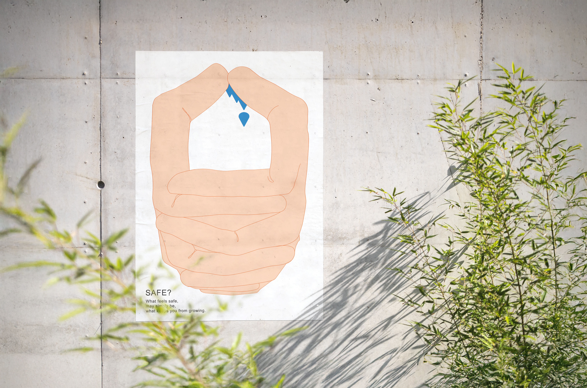
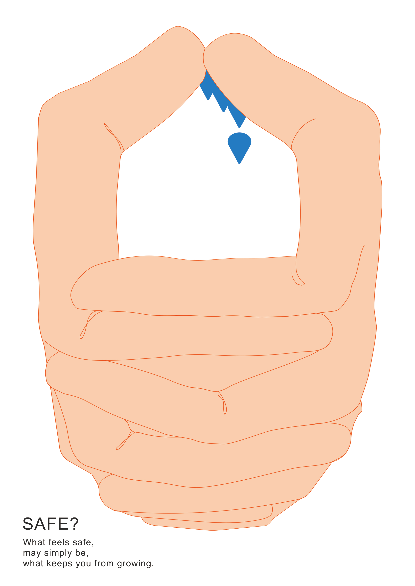

SAFE
Poster Design
Visual Communication
Safety and growth do not necessarily progress together. Starting with a small survey, this project uses numerical data to visualize how people perceive the relationship between being protected and feeling safe. Drawing on those results, it asks whether excessive protection might weaken our willingness to take on challenges and our confidence in doing so.

Can protection become a barrier
The repeated arms form an enclosure that appears protective at first, but gradually reduces the space available for movement. The image asks where protection ends and restriction begins.

Selected
JAGDA International Student Poster Award
2025